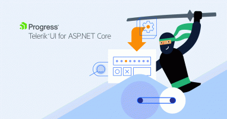
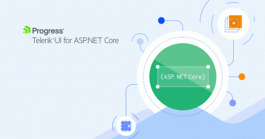

Also on Telerik Blogs
How to Integrate Blazor WASM into …
See how to integrate a Blazor WebAssembly project into an existing …

The Power of the Telerik UI for …
Learn about the types of charts available and how to implement them and …
What You Need to Know About Logo …
Thinking about offering logo design services to clients? Before you do, make …

Getting Started with Generics in .NET
Learn about generic types in C#, plus how to create an API in .NET 7 using the …

Adding Audio Visualization to a …
In this post, we will build a simple React app that shows how to use the …
Xamarin.Forms to .NET MAUI: How Layout …
Xamarin Forms developers need to take note of these small yet significant …
Angular Basics: Built-in Pipes with …
Angular has some built-in pipes that allow us to render numbers and string …
Big Changes Coming for Blazor in .NET 8
.NET 8 is shaping up to be a significant release for Blazor, and there’s one …